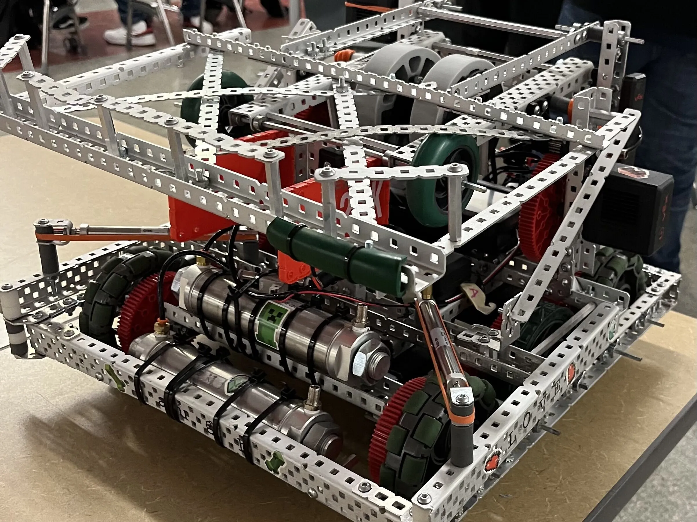
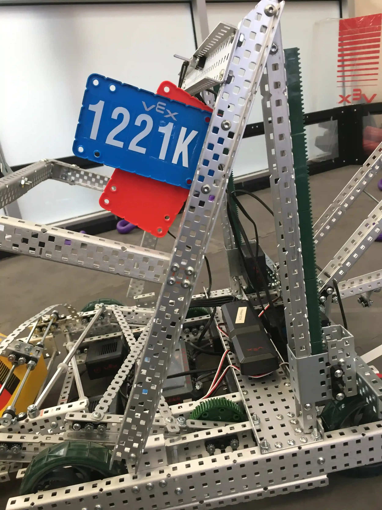

Competitive Robotics
Showcasing my work on the VEX robotics team in high school.

Overview
During high school, I participated in VEX Robotics, designing and building competition robots for three seasons. Each year presented unique challenges, requiring mechanical design, programming, and teamwork. Competitions included autonomous and driver-controlled periods, with awards for engineering excellence assessed by interviews with judges, engineering journal quality, and match performance.
In my sophomore year, for the Tipping Point season, I contributed to the robot's design by creating a mechanism that used a linear actuator on the back of the robot to deposit rings into mobile goals, scoring extra points during the autonomous period. As the linear actuator went down to pick up a mobile goal, pre-set rings on the robot automatically deployed into the mobile goal. See Fig. 1. for a side view of the robot.
As chief builder in my junior year for the Spin Up season, I designed an intake mechanism using flex wheels and conveyor belts to pick up discs and deposit them in the shooting mechanism. I also designed a trigger system for rapid-fire shooting. See Fig. 2. for the first iteration and Fig. 3. for a video demo. After the first competition, we refined the design to allow same-side intake and shooting. By replacing the conveyor belt with flex wheels, the discs could be drawn in at a steeper angle and at a faster rate. See Fig. 4. for an in-progress photo of the improved intake. Additionally, we added an expansion mechanism to score endgame points. I designed the deployment system using a motor to release the expansion mechanism and a lever tensioned with rubber bands to deploy it on the field. See Fig. 5. for the deploying mechanism and Fig. 6. for a photo of our robot after expanding at the end of a match.
In my senior year, I was elected team captain for the Over Under season. I led weekly meetings, managed the engineering journal, and designed a custom 4-motor geared drivetrain and a pneumatic elevation system. See Fig. 7. for the drivetrain and Fig. 8. for the initial version of the elevation mechanism. We won the Tournament Champion, Excellence Award, and Judges Award, advancing us to the state competition. See Fig. 9. for the completed robot, in which I also assisted in the pneumatic front flaps and Fig. 10. for our victory.
Gallery

Fig. 1. A side view of the Tipping Point robot, the linear-actuator mechanism is pictured on the right.